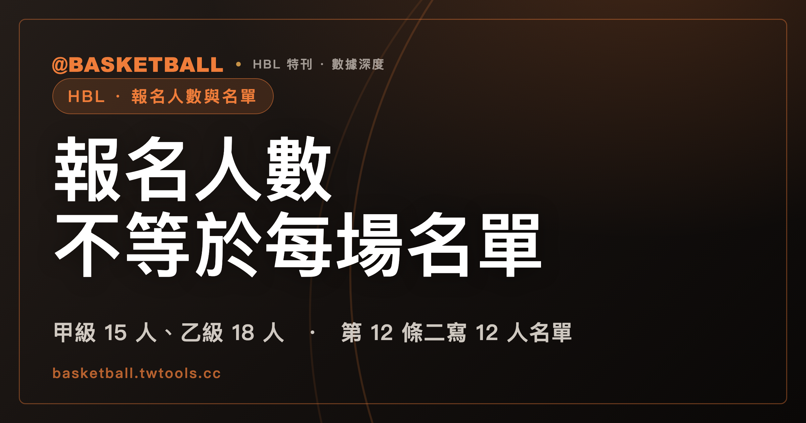

HBL 名單有兩個數字：114 學年度報名甲級 15 人、乙級 18 人，每場名單則是第 12 條二所載的 12 人
114 學年度規程的第 9 條二規定報名人數（甲級球員含隊長 15 人、乙級 18 人），第 12 條二則載明每場由報名球員中提出 12 人名單；兩個數字由不同條文各自規定，本文引用的規程文字沒有寫兩者的換算關係，第 12 條二是否適用乙級，本文引用的規程文字也未明說。

新手村｜HBL・報名人數與每場名單
本文依 114 學年度高級中等學校籃球聯賽競賽規程（修正版）寫成；新學年度若改版，以 HBL 官網最新規程為準。本文引用的是 2026 年 9 月 27 日逐頁擷取的規程文字，部分頁面只有節錄；文中說「規程沒有寫」，指的是本文引用的文字裡沒有，不代表官方完整規程一定沒有。
第一次翻 HBL 規程的人，容易在「球員 15 人」「球員 18 人」「正選 12 人名單」這幾個數字之間打結：到底一支球隊有幾個人？這個問題其實在問三件不同的事。一是學校報名時，每隊可以報幾位球員；二是每一場比賽，學校要提出一份多少人的名單；三是報名截止之後，名單還能不能換。三件事在 114 學年度規程裡由不同條文各管一段。
本文把這三件事分成三道關卡來讀。「三道關卡」是本文的編排說法，規程沒有用這個詞。讀完之後，你應該能做到兩件事：看到一個名單相關的問題，先判斷它屬於哪一道關卡、該翻哪一條；遇到本文引用的規程文字沒有寫的地方，也知道該停在哪裡，不硬湊答案。
先看全貌。
| 關卡 | 114 學年度規程條文 | 內容 | 適用範圍 |
|---|---|---|---|
| 報名人數 | 第 9 條二(一)、(二) | 甲級球員（含隊長）15 人，乙級 18 人；隊職員各職務各 1 人 | 條文分甲級、乙級兩款，未分男生組或女生組 |
| 每場提出的名單 | 第 12 條二、第 14 條一 | 每場由報名球員中提出「該場正選 12 人名單」；賽前 30 分鐘由教練提交球員名單 | 本文引用的規程文字未寫組別、級別或階段限定；乙級是否適用未明說 |
| 名單更換 | 第 9 條三(十一)、第 9 條四(一)(二) | 乙級：聯賽報名截止後不得更換球員名單；甲級：因身體狀況無法參賽時，在限定條件下辦理更換 | 乙級、甲級各為一款；甲級另分男生組與女生組、預賽與複賽 |
報名時，甲級每隊球員 15 人、乙級 18 人
第一道關卡是報名。114 學年度規程第 9 條二(一)規定，甲級每隊的編制是：領隊、主教練、第一助理教練、助理教練、隨隊教師各 1 人，運動防護員或物理治療師擇 1 人，球員（含隊長）15 人。第 9 條二(二)是乙級，隊職員的編制與甲級相同，球員（含隊長）為 18 人。
這一節有三個細節值得停一下。
第一，人數含隊長。規程寫的是「球員（含隊長）」，隊長不是另外加上去的名額，所以甲級的 15 人已經把隊長算進去了。
第二，乙級的報名人數比甲級多 3 人。這是兩款條文各自寫出的數字，本文引用的規程文字沒有說明為什麼甲級與乙級不同，本文也不猜原因。
第三，職員欄裡「運動防護員或物理治療師擇 1 人」是二選一。其他職務各 1 人。隊職員各自需要什麼資格，屬於另一個題目，可以看本站的HBL 隊職員資格入門。
要注意的是，這一關談的是報名名單，還沒有談到任何一場比賽。每一場比賽實際提出哪些人，是下一道關卡的事。
每場比賽提出的名單，第 12 條二所載是「正選 12 人」
第二道關卡是每一場比賽。114 學年度規程第 12 條二寫道：參賽學校每場比賽可由報名球員中提出該場正選 12 人名單出場比賽，未登入該場名單之球員不得出賽。
把這一條拆成三個動作來讀：
- 名單的來源是報名球員，也就是第一道關卡報上來的人。
- 每場都要提出一份名單，條文用的說法是「該場正選 12 人名單」。
- 沒有登入該場名單的球員，不得出賽。
第 14 條一補上時間點：參賽學校應於賽前 30 分鐘由教練提交球員名單。這一款只寫了「賽前要提交名單」這件事，沒有再提 12 人這個數字。另外，第 14 條資格查驗規定(一)提到，各階段賽事第一場出賽前，文件不符規定的球員無法於該場登錄，補正後方得登錄及出賽；資格內容本身請看HBL 球員資格入門與HBL 資格查驗入門。
這一節有三個地方，行文要守住本文引用的規程文字的範圍，因為本文引用的規程文字只給了這麼多。
「正選」一詞規程有用、沒有定義。 第 12 條二用了「正選 12 人名單」，但本文引用的規程文字沒有解釋「正選」的意思。從上下文看，它指的是那一場提出的名單。這一款談的是名單的提出與登入，本文引用的規程文字沒有從這一款寫到場上人數，所以本文不把「正選」讀成先發，也不用這一款推算場上有幾個人。為了避免混淆，本文一律稱它「該場名單」。
第 12 條二寫了 12 人，沒有寫「至多」或「至少」。 本文引用的條文只說「可由報名球員中提出該場正選 12 人名單」。名單少於 12 人時能不能出賽，本文引用的規程文字沒有明說，本文查無答案，不能替它補一個。
第 12 條二是否適用乙級，本文引用的規程文字未明說。 第 12 條二在本文引用的規程文字中沒有寫組別或級別，也未見排除任何一級的字樣。第 12 條一寫的是「本比賽除特別規定外，採用中華民國籃球協會審定之最新國際籃球規則」，乙級的特別規定列在第 12 條三，本文引用的規程文字中只見比賽時間與犯規三項，沒有提到名單。這些是本文的推論：第 12 條二沒有寫限定，也沒有被寫成乙級的例外；但推論不等於規程的話，乙級是否適用，本文不下結論。想理解 HBL 規程與 FIBA 規則之間的關係，可以看HBL 規則與 FIBA 規則的差別。
報名的 15 人或 18 人，與每場的 12 人，規程有寫換算嗎？
這是讀者容易自己補出一條規則的地方。
15 或 18 是第 9 條二寫的報名人數，12 是第 12 條二寫的每場名單人數。兩個數字放在一起，很容易讓人想到「報了 15 人，每場挑 12 人，剩下的人怎麼辦」。但這是把兩條各自成立的規則連在一起讀。本文引用的規程文字沒有把兩者寫成換算、因果或分配辦法，本文也只並列陳述：報名人數由第 9 條二規定，每場名單由第 12 條二規定。
下面用一個練習情境，讓你自己判斷一次。以下都是假設，不是任何真實球隊或真實賽事。
假設甲隊是 114 學年度的甲級球隊，報名球員 15 人（含隊長），隊職員依第 9 條二(一)的編制報名。第 12 條二沒有寫級別限定，本例照字面讀。某場比賽賽前 30 分鐘，甲隊教練從這 15 人中提出一份名單交給大會，名單上有 12 位球員。
- 問題一：名單外的某位報名球員，這場能不能出賽？依第 12 條二，未登入該場名單之球員不得出賽，所以不能。
- 問題二：甲隊「應該」提出幾人的名單？第 12 條二寫的是每場「可由報名球員中提出該場正選 12 人名單」，沒有寫人數下限，本文查無答案。
- 問題三：名單交出去的時間有沒有規定？有，第 14 條一寫的是賽前 30 分鐘由教練提交。
再假設乙隊是 114 學年度的乙級球隊，報名球員 18 人。問：乙隊每場也是提出 12 人名單嗎？第 9 條二(二)只回答了報名人數 18 人；至於每場名單，要看第 12 條二是否適用乙級，而本文引用的規程文字沒有明說。這一題的正確答案是「本文引用的規程文字未明說，需要對照 HBL 官網的完整規程或向主辦單位確認」，而不是硬套甲級的做法。
三個小問題各對到不同的條文，這就是把名單拆成關卡的好處：先分辨問題屬於哪一關，再翻對應的條文。
乙級報名截止之後，不得更換球員名單，球衣號碼不在此限
第三道關卡是更換。乙級與甲級寫在不同的款。
114 學年度規程第 9 條三(十一)寫的是乙級：參賽學校於聯賽報名截止後，不得更換球員名單，球衣號碼不在此限。
這一款有兩個重點。時間點是「聯賽報名截止後」；例外是球衣號碼，也就是截止之後球衣號碼仍可調整，球員名單本身不能換。
要注意的是，這一款是本文在本文引用的規程文字中找到的乙級名單更換規定，共一款。乙級有沒有其他因傷更換的機制，本文引用的規程文字沒有寫，本文沒查到；但本文引用的規程文字是逐頁節錄，也不能因此斷言規程全文沒有。所以這一節的結論停在條文寫的範圍：乙級在聯賽報名截止後不得更換球員名單，球衣號碼例外；除此之外，本文不多說。
甲級球員因身體狀況無法參賽時，更換有階段、時點、文件與前 8 名鎖定等限定
甲級的更換規定在第 9 條四(一)，條件比乙級細得多。114 學年度規程的條文意思是：甲級參賽學校的球員若因身體狀況致無法參賽，在限定的階段與時點，可以辦理更換。把條文拆開，每個限定都不能漏。
| 限定 | 條文內容（114 學年度規程，甲級） |
|---|---|
| 組別與階段 | 男生組可於預賽、複賽；女生組於預賽階段 |
| 時點 | 該階段比賽 1 週前（以該階段賽程開始日算起） |
| 程序 | 由學校具函，並檢附公私立教學醫院診斷證明書，送本會辦理更換手續 |
| 鎖定 | 一經取得前 8 名之資格時，不得再更換球員名單 |
| 更換對象的資格 | 更換球員資格需符合第 7 條的規範 |
| 原因 | 球員因身體狀況致無法參賽 |
第 9 條四(二)接著補了一款：被更換的球員如果傷勢復原，得再次辦理更換，但一樣要在第 9 條四(一)所述階段的比賽 1 週前（以該階段賽程開始日算起），由學校具函向本會辦理。
「前 8 名之資格」規程有用、本文引用的規程文字沒有定義是哪個階段的結果取得，本文不替它補。更換球員要符合的第 7 條資格，內容可以看HBL 球員資格入門，本文不重複。
甲級這款有不少地方可以拿來練習，下面又是假設情境，用「丙隊」「丁隊」代稱，都不是真實球隊。
- 假設丙隊是 114 學年度的甲級男生組球隊，預賽階段賽程開始日前 3 天，有球員因身體狀況無法參賽。第 9 條四(一)要求在該階段比賽 1 週前辦理，3 天前已經超過這個時點，不符合本款的時限；本文引用的規程文字中未見本款以外的甲級更換情形，本文查無其他辦法。
- 假設丁隊是 114 學年度的甲級女生組球隊，到了複賽階段才發現需要更換。照第 9 條四(一)的文字，女生組寫的是預賽階段，複賽階段沒有被寫進這個句子；本文的讀法是，這一款沒有給女生組複賽階段辦理更換的依據，是否另有其他規定，本文引用的規程文字沒有寫。
- 假設戊隊是 114 學年度的甲級男生組球隊，已取得前 8 名之資格，之後才有球員因身體狀況無法參賽。第 9 條四(一)寫的是「一經取得前 8 名之資格時，不得再更換球員名單」，所以本款不再提供更換途徑。
三個假設分別用到時點、組別階段、前 8 名鎖定三個限定。任何一個限定沒有帶進判斷，答案就可能不同。
三道關卡放在一起：遇到名單問題，可以照這個順序問
把三道關卡連起來，可以得到一個自己動手的流程。以下是本文整理的讀法，不是規程原文的流程：
- 問題在問「隊上可以報幾個人」：翻第 9 條二，看是甲級還是乙級。
- 問題在問「某一場比賽誰可以登記出賽」：翻第 12 條二與第 14 條一，看名單有沒有提出、有沒有登入；乙級是否適用，本文引用的規程文字未明說，需要向主辦單位確認。
- 問題在問「報名之後能不能換人」：先分甲級或乙級。乙級翻第 9 條三(十一)，甲級翻第 9 條四，並逐項核對男生組或女生組、預賽或複賽、1 週前、證明文件與前 8 名鎖定。
- 本文引用的規程文字沒寫的部分，例如名單人數下限、換人次數上限、乙級因傷更換，先不要自己補，回官網完整規程查證。
這樣做的好處，是每一次判斷都能指到一個條號，而且能清楚說出「這句話的答案是條文寫的，還是本文推論的」。
常見問題
114 學年度 HBL 每隊報名可以有幾位球員？
依 114 學年度規程（修正版）第 9 條二，報名時甲級每隊球員（含隊長）15 人，乙級 18 人；條文分甲級、乙級兩款，未分男生組或女生組。隊職員方面，甲乙級都是領隊、主教練、第一助理教練、助理教練、隨隊教師各 1 人，運動防護員或物理治療師擇 1 人。
每場比賽要提出幾人的名單？
114 學年度規程（修正版）第 12 條二載明，參賽學校每場比賽可由報名球員中提出該場正選 12 人名單，未登入該場名單之球員不得出賽。本文引用的規程文字中這一條沒有寫組別、級別或階段限定，乙級是否適用未明說。規程也沒有寫報名人數 15 或 18 與這個 12 人的換算關係，並列陳述而已。名單須於賽前 30 分鐘由教練提交（第 14 條一）。
乙級報名截止後，可以更換球員名單嗎？
依 114 學年度規程（修正版）第 9 條三(十一)，乙級參賽學校於聯賽報名截止後，不得更換球員名單，球衣號碼不在此限。本文引用的規程文字中乙級只見這一款更換規定；乙級有沒有其他更換機制，本文沒查到，不能因此寫成乙級沒有任何更換途徑。
甲級球員因身體狀況無法參賽，可以更換嗎？
依 114 學年度規程（修正版）第 9 條四(一)，甲級球員因身體狀況無法參賽時，男生組可於預賽、複賽，女生組於預賽階段，在該階段比賽 1 週前（以該階段賽程開始日算起），由學校具函並檢附公私立教學醫院診斷證明書送本會辦理更換；一經取得前 8 名之資格時不得再更換，更換球員資格需符合第 7 條。被更換的球員傷勢復原後，依第 9 條四(二)得再次辦理更換，時點同樣需在該階段比賽 1 週前。
資料來源
- 114 學年度高級中等學校籃球聯賽競賽規程（修正版）：第 9 條二(一)(二)、第 9 條三(十一)、第 9 條四(一)(二)、第 12 條一至三、第 14 條一與資格查驗規定。本文引用的是 2026 年 9 月 27 日逐頁擷取的存檔：hbl.com.tw/rule